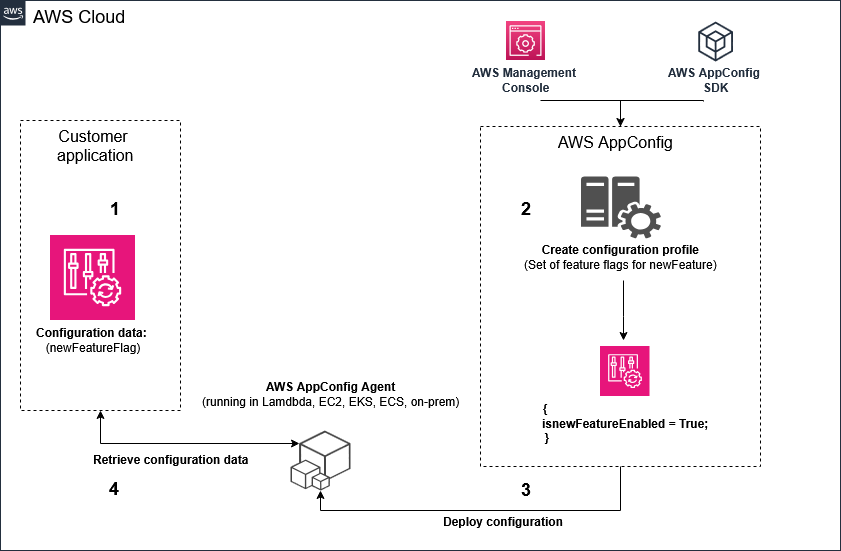
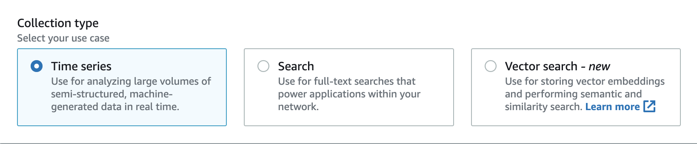
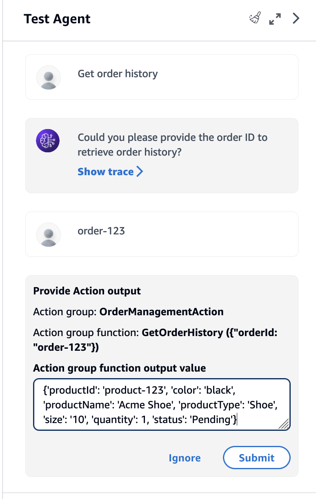
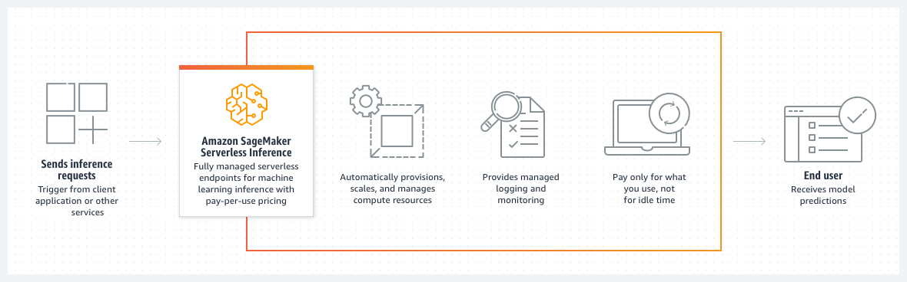
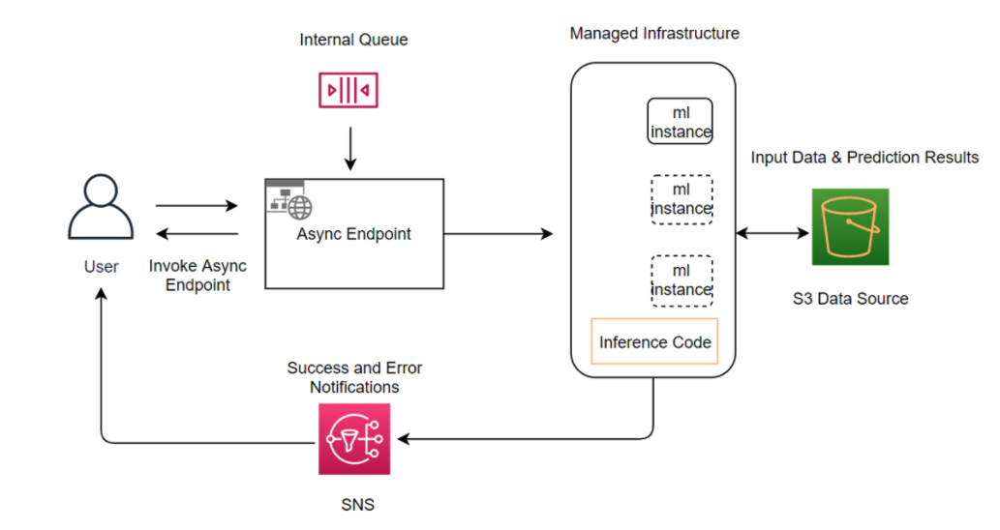
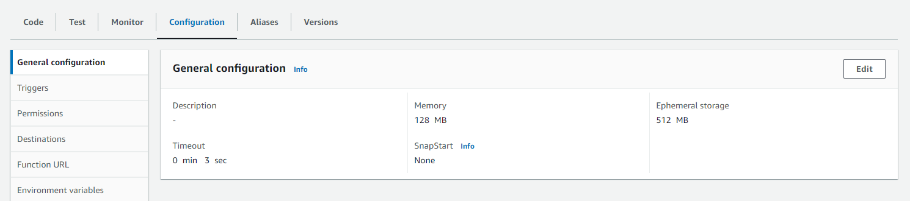
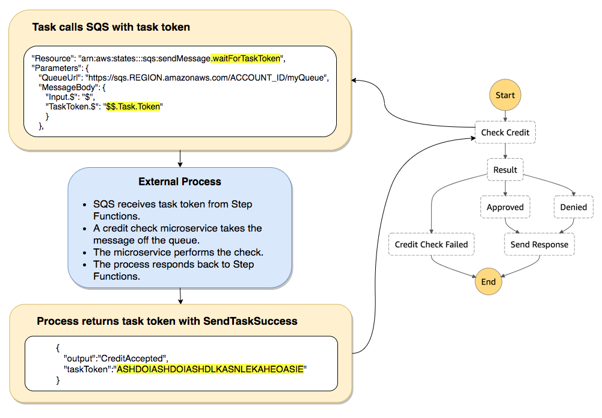
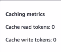
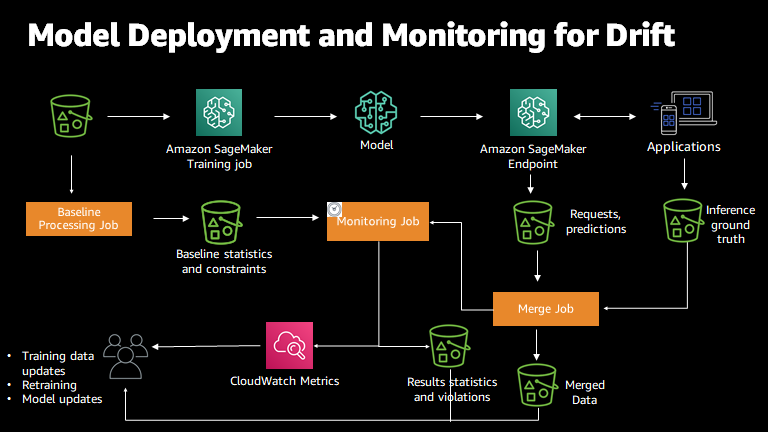
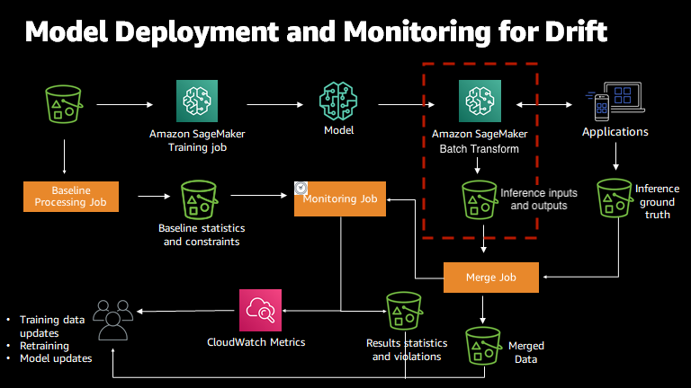

AWS Certified Generative AI Developer, Professional · AIP-C01
Study treatise: one path from first principles to exam answer
Status of checks. Domain 1 and Domain 4 were fact-checked line by line against AWS documentation. Domain 3 and Domain 5 were checked by a second pass. Domain 2 has an open fact-check. Re-check every item marked in the gap lists before exam day.
Part 0
The exam at a glance
The exam has 75 questions. Sixty-five are scored and ten are unscored. The exam uses multiple choice and multiple response questions. The passing score is 750 on a scale from 100 to 1,000.
| Item | Value |
|---|---|
| Exam name | AWS Certified Generative AI Developer, Professional |
| Exam code | AIP-C01 |
| Questions | 75 total. 65 scored. 10 unscored. |
| Question types | Multiple choice (one correct answer) and multiple response (two or more correct answers) |
| Passing score | 750 on a scale from 100 to 1,000 |
| Scoring by section | Not in source. The pass decision uses the whole exam. |
| Duration and fee | 180 minutes and 300 USD. Stated in the repository README. Not on the official certification page. Confirm before exam day. |
Domain weights
| Domain | Name | Weight in the repository README | Approximate question count (Inference) |
|---|---|---|---|
| 1 | Foundation model integration, data management, and compliance | 31% | about 20 |
| 2 | Implementation and integration | 26% | about 17 |
| 3 | AI safety, security, and governance | 20% | about 13 |
| 4 | Operational efficiency and optimization | 12% | about 8 |
| 5 | Testing, validation, and troubleshooting | 11% | about 7 |
The weights come from the repository README. The official guide page did not show them in this build. Confirm each weight against the official exam guide.
Target candidate
AWS expects two or more years of production application experience. It also expects one year of hands-on generative AI work. The exam assumes working knowledge of AWS compute, storage, networking, security, and infrastructure as code. Model training, advanced machine learning, and data engineering are outside the scope.
Part 1
How AWS asks questions
Each question has a company, a constraint, and a design that is broken or incomplete. Several options look correct. One option meets every constraint at the same time.
- Read the last sentence of the stem. Note what it asks for.
- List each constraint. Examples are a cost ceiling, a latency budget, a compliance rule, and an existing AWS footprint.
- Pick the option that meets all constraints.
- Choose the simplest managed option. Choose custom work only when a constraint forces it.
Part 2 · Domain 1 · Weight 31 percent (repository README)
Foundation model integration, data management, and compliance
Domain 1 asks one question. How do you get the correct model, the correct data, and the correct controls into a working system on AWS? It has six task statements. Read each one in order.
1.1 Design the solution first, then prove it
Design from the constraints. Then build a proof of concept. Use on-demand inference first. Buying Provisioned Throughput or hardware before a proof of concept is a distractor pattern. Prove the approach on real data, then commit capacity.
Use the AWS Well-Architected Framework and the Generative AI Lens to keep designs consistent across teams.
1.1 The approach ladder
Climb the ladder from the cheapest rung. Stop at the first rung that meets the requirement.
| Rung | Use when | Signal words |
|---|---|---|
| 1. Prompt engineering | Start here. The cheapest step. | Format, tone, instructions |
| 2. RAG | Documents change often, or answers must cite sources. | Private, current, cite, sources |
| 3. Agents | The model must take actions, such as calling tools or APIs. | Take action, call, update a system |
| 4. Fine-tuning | Stable behavior and a large, repeated task volume. | Fixed format at high volume, distill |
1.1 Knowledge or behavior
| Need | Approach |
|---|---|
| Private, current, or cited facts | RAG with a Knowledge Base |
| Fixed format, tone, or voice at high volume | Fine-tune a small model (distillation) |
| Calls to APIs or databases | Agents |
1.2 Choose a model on five axes
| Axis | What to check |
|---|---|
| Capability | Reasoning, multilingual, code, vision |
| Cost per token | Input and output prices differ. Output tokens often cost more. |
| Latency | Time to first token and tokens per second. Streaming improves perceived speed. |
| Context window | How much text fits in one call, including retrieved chunks. |
| Regional availability | Is the model offered in the Region where you run? |
Order of decision: latency needs, then reasoning difficulty, then cost. Test the final choice on your own data. The flagship model is not the default answer. It can break a latency budget.
1.2 Routing mechanisms
| Mechanism | Routes by | Use when |
|---|---|---|
| Cross-Region inference profile | Regional availability and throughput | More throughput across Regions. Same model family. |
| Intelligent prompt routing | Predicted response quality and cost | Chooses between two models in one model family. |
| Lambda routing with AppConfig | Rules you write | You need your own policy and a model ID read at runtime. |
1.2 Cross-Region inference and data scope
Call the inference profile ID, such as one with the us. or eu. prefix. Requests route to Regions listed in the profile.
A global profile can send requests outside a strict EU boundary. A geographic EU profile keeps routing inside the EU Regions it lists. Check the profile scope against the residency rule.
Cross-Region inference does not provide automatic failover for your application. Add retries and fallback in the application for an availability target.
1.2 Switch, survive, and customize
- Switch without a redeploy. Read the model ID from configuration. AWS AppConfig with Lambda and API Gateway supports this pattern.
- Survive disruptions. A circuit breaker stops calls to a failing model. Graceful degradation returns a smaller model or a cached answer.
- Customize with the least effort. Fine-tune on SageMaker AI when prompts and RAG fail. Use parameter-efficient methods such as LoRA.
- Retire safely. Register each model version in SageMaker Model Registry. Plan rollback before you deploy.

1.2 Customization ladder
| Rung | What changes | Use when |
|---|---|---|
| Prompt engineering | Instructions only | Try this first. |
| RAG | Private or current facts at query time | Facts change, and citations are needed. |
| Supervised fine-tuning | Model parameters, from labeled examples | Stable behavior that prompts cannot hold. |
| Distillation | A smaller student model learns from a larger teacher | A narrow task at high volume. |
Fine-tuning does not fix facts that change. Use RAG for those facts.
1.2 Model lifecycle
Every release should be a version you can roll back. A model registry groups versions and tracks approval status. CloudTrail records Amazon Bedrock API calls, including InvokeModel and Converse, for the audit trail.
1.2 Three ways to call a model
| API | Use it for | Limit |
|---|---|---|
| Converse | Chat and tool use through one request format | Text, images, documents, and video for supported models. Not an embeddings API. |
| InvokeModel | Provider-specific bodies and embeddings | You build each provider's request body. |
| ConverseStream | Tokens as they arrive | The client must read a stream. |
Streaming does not shorten total generation time. It shortens the time to the first visible token.
1.2 Structured output
A schema is stronger than a request for JSON. Converse accepts a JSON schema in its output configuration for supported models. Check the model card for support.
1.3 Data validation and processing in four stages
- Validate. AWS Glue Data Quality rules, Lambda checks, and CloudWatch metrics.
- Process. Amazon Bedrock Data Automation for documents, images, audio, and video. SageMaker Processing for batch jobs. Amazon Transcribe for speech.
- Format. JSON for Bedrock API requests. Conversation format for dialog apps.
- Enhance. Amazon Comprehend extracts entities and detects PII. Lambda normalizes records.
| Need | Service |
|---|---|
| Extract fields from documents, images, video, and audio | Amazon Bedrock Data Automation |
| Rule-based data quality checks | AWS Glue Data Quality, with rules written in DQDL |
| Speech to text with speaker labels | Amazon Transcribe |
| Find and redact PII in text | Amazon Comprehend PII detection |
1.3 Services that look right and are wrong
| Service | Looks right because | Why it is wrong here |
|---|---|---|
| Amazon Kendra | Enterprise search over documents | Not open to new customers. AWS points new work to Bedrock Knowledge Bases. |
| Amazon ElastiCache | Fast in-memory reads | Not a durable store of record. Durable only with durability enabled on node-based Valkey clusters. |
| Bedrock Guardrails | Reads document text | Checks content against safety policies. Does not extract data. |
| Amazon Translate | Changes the language of text | Translates text. Use Comprehend to detect PII. |
1.3 Chunking by document type
| Strategy | Use when | Note |
|---|---|---|
| Fixed size | FAQs and short, self-contained text | Simple to run. |
| Hierarchical | Manuals, contracts, long documents with headings | Small child chunks match. Parent chunks give context. |
| Semantic | Quality matters more than cost | Splits on meaning. Costs more to process. |
| Custom with Lambda | Tables, equations, figures with captions | Boundaries follow the document structure. |
1.3 Retrieval symptoms
Chunks look relevant and answers are wrong. The failure is in retrieval, not generation. Changing the generator model does not fix broken retrieval. After a re-sync, check the embedding model version and the chunking configuration. To change chunking on a Knowledge Base data source, add a new data source with the new setting, then sync it.
1.4 Vector stores
| Option | Fits |
|---|---|
| Bedrock Knowledge Bases | Private documents with citations. Managed RAG. The default answer. |
| OpenSearch Serverless | Managed vector search that scales with usage. Combines filters and vectors. |
| Aurora with pgvector | Vector search in a relational database the team already runs. |
| S3 Vectors | Large corpus, infrequent queries, no cluster to run. |
| DynamoDB | Metadata and embeddings in one table design. |
| Neptune | GraphRAG. Traverses explicit relationships between entities. |
S3 Vectors fits large, rare searches. An always-on cluster costs money even when few queries arrive. For steady, interactive search with high query volume, an always-on store fits better. The cheapest store is wrong when the latency need is strict.

1.4 Embeddings
Embeddings turn meaning into vectors. Amazon Titan Text Embeddings v2 outputs 1024 (default), 512, or 256 dimensions. Cohere Embed uses an input_type value. Use search_query for questions and search_document for passages. Call embedding models with InvokeModel, not Converse.
Keyword search misses paraphrases such as "reset my password" and "change my credentials". Vector search matches them. Smaller dimensions cost less and may lower quality. Test both sizes on a golden set and pick the one that passes.
1.5 RAG end to end
Each stage is a design decision. A failure in one stage looks like a failure in the answer. Diagnose the stage that failed.
1.5 Retrieval fixes
| Problem | Fix |
|---|---|
| Keyword-heavy queries drift | Hybrid search that combines semantic and keyword signals |
| Top results are related but not right | Reranker that scores candidates for relevance before generation |
| Vocabulary gap, such as refund and return | Query expansion |
| Multi-hop question | Query decomposition into sub-questions, then merge the results |
Hybrid search finds exact codes and citation strings with keywords. It finds related meaning with vectors. A reranker orders candidates. It does not add chunks that retrieval missed.
1.5 Knowledge Bases or hand-built RAG
Choose Bedrock Knowledge Bases for private documents with citations and the least custom effort. A sync and one API call cover the flow. Choose hand-built RAG only when a stated requirement, such as a custom retrieval algorithm, needs it.
Web crawler connectors cannot be created on customer-managed knowledge bases after September 30, 2026. Use Amazon Bedrock Managed Knowledge Base for web sources. This date comes from the Domain 1 fact-check. Confirm it on the Knowledge Base documentation before exam day.
1.5 Citations and grounding
RetrieveAndGenerate returns a generated answer with source citations. Citations give attribution for audits. Contextual grounding checks return a score for each answer. Auditors can sample those scores.
1.6 Prompt governance
- Instruct. Store role definitions and variables in Amazon Bedrock Prompt Management. Enforce responsible AI rules with Bedrock Guardrails.
- Govern. Keep parameterized templates under version control. Use approval workflows before publication. Track use with CloudTrail.
- Test. Use Lambda to check expected output. Use Step Functions to run edge cases.
- Improve. Give structured inputs, a stated output format, and feedback loops.
1.6 Prompt Flows or Step Functions
| Need | Use |
|---|---|
| A fixed prompt chain with branches, built in the console | Amazon Bedrock Prompt Flows |
| A durable workflow with waits, retries, and human approval | AWS Step Functions with callback task tokens |
| A workflow that waits about two days for a person | Step Functions Standard. Runs for up to one year. |
1.6 Tenant and region isolation
Isolation must be structural. Use one knowledge base for each tenant. Use IAM to scope each role to its own knowledge base. Use metadata filters for region or product line. The model receives only what retrieval returns. A prompt that says "ignore other tenants" is not isolation.
Tools for agents: MCP
The Model Context Protocol (MCP) sets a standard way for agents to find and call tools. Remote MCP servers use Streamable HTTP. MCP is the tool connection standard. It is not a model choice or a guardrail.
Domain 1 gaps
Not in source: official sample questions for Domain 1. Named multimodal embedding models such as Titan Multimodal. Amazon SageMaker JumpStart, Neo, and Unified Studio.
Part 3 · Domain 2 · Weight 26 percent (repository README)
Implementation and integration
Domain 2 covers agents, deployment, enterprise integration, API patterns, and application tools. Its fact-check is still open. Read the official Bedrock Agents and Step Functions pages before exam day.
2.1 Anatomy of an agent


invoke_agenttakesagentId,agentAliasId,sessionId, andinputText. It returns a stream.- The
sessionIdis the memory key for one conversation. - Set
enableTraceto get a record for each step.
2.1 DRAFT, versions, and aliases
Configuration changes go to DRAFT. Callers reach a new version only after you create a version and point an alias to it. Console tests run against DRAFT. A passing console test does not prove alias traffic works. A new tool that works in the console but not in production usually means the alias still points to an older version.

2.1 Session memory and customer memory
The agent session expires. Customer memory must outlive it. Use DynamoDB for memory that lasts weeks. DynamoDB gives single-digit millisecond lookup by a key such as customer or session ID. It encrypts data at rest. Native TTL expires old records. The agent session TTL is set in seconds, between 60 and 5400.
2.1 Agent loop limits
| Limit | Control |
|---|---|
| Stop | Stopping conditions bound the number of steps. |
| Time | Timeouts in Lambda and Step Functions. |
| Access | IAM policies set resource boundaries on every tool call. |
| Failure | Circuit breakers stop repeated failures to a tool. |
2.1 Multi-agent collaboration
Bedrock multi-agent collaboration uses a supervisor agent and collaborator agents. Each collaborator calls its own tools through its own action group. Delegation is not an action group.
2.1 Open-source frameworks and MCP hosting
Strands Agents and AWS Agent Squad are open-source frameworks named in the exam guide. Choose a framework when the team needs code-level control. Choose a managed agent when the console is enough.
Host light, stateless, bursty MCP tools on Lambda. Heavy, stateful servers need a different host. Their host is Not in source for this build. AgentCore Runtime requires Streamable HTTP for remote MCP servers.
2.2 Deployment patterns
| Option | Fits |
|---|---|
| On-demand | Spiky or unknown traffic. Pay per token. No commitment. |
| Provisioned Throughput | A predictable baseline. Reserved model units. Hourly billing with a commitment term. |
| SageMaker AI endpoints | Custom or fine-tuned models. Real-time, serverless, or asynchronous. |
| Batch inference | Offline sets that can wait for hours. About half the on-demand price for select models. |
For mixed traffic, use Provisioned Throughput for the baseline and on-demand for spikes.
2.2 SageMaker endpoints
| Endpoint | Fit |
|---|---|
| Real-time | Steady traffic. Autoscaling. Blue-green and rolling deployments. |
| Serverless Inference | Intermittent traffic. Scales to zero. Trade-off: cold start on the first request. |
| Asynchronous | Long jobs, up to one hour. Queued. Results go to S3. |


2.2 Lambda limits and long work
A Lambda function runs for at most 15 minutes. Put long flows in Step Functions and keep each Lambda step short. Waits in Lambda bill for the full duration. API Gateway REST integrations stop at a 29-second integration limit. Streaming does not change that limit.

2.2 Human approval with a task token

The execution history gives the audit trail. Standard workflows keep execution history for up to 90 days. Use Standard for waits measured in hours or days.
2.3 Enterprise gateway and access
Put one controlled entry in front of the models. API Gateway, Lambda or EventBridge, and then Bedrock or SageMaker AI. One gateway enforces guardrail identifiers, IAM policy, uniform logs, and team cost tags. AWS Outposts keeps data on premises for rules that keep data on site. AgentCore Gateway routes agent traffic through one endpoint and includes observability and auditing.
2.3 Converse or InvokeModel
| Task | API |
|---|---|
| Chat and tool use, one code path for many models | Converse |
| Embeddings | InvokeModel with an embedding model |
| Provider-specific body or parameter | InvokeModel. Claude requires anthropic_version and max_tokens in the body. |
2.3 ApplyGuardrail on any model
ApplyGuardrail applies a Bedrock safety policy to content from any model. It takes content and returns an allow or block result. It does not call the model. Input screening and output screening are separate checks.
2.4 Streaming to the browser
ConverseStream and InvokeModelWithResponseStream send tokens as they arrive. WebSocket APIs or server-sent events carry the stream to the browser. A REST integration still stops at the 29-second limit. Pick a path that can hold the stream.
2.4 Call models reliably
- Call. Use Bedrock APIs for synchronous calls. Use SQS for asynchronous work that can finish later.
- Recover. Use exponential backoff with jitter. Set a maximum attempt count. Use a fallback model.
- Observe. Trace calls with AWS X-Ray. Log token counts per call.
- Route. Use static configuration, Step Functions for content-based routing, or metric-based routing.
2.5 Application tools
| Need | Service |
|---|---|
| Coding help in the IDE, code changes, test generation | Amazon Q Developer |
| Chat over company data for employees | Amazon Q Business |
| Web app with managed hosting and sign-in | AWS Amplify |
| Real-time collaborative editing | AWS AppSync with DynamoDB |
| Extract data from documents, images, audio, and video | Amazon Bedrock Data Automation |
| No-code prompt chains with branches | Amazon Bedrock Prompt Flows |
2.5 Prompt variants, versions, and caching
A variant compares two wordings side by side. A version is an immutable snapshot that you can roll back to. Prompt caching reuses a repeated prefix. The cached part must match exactly and sit before the changing content. Cache writes cost extra, so caching pays off only with repeat volume.
Domain 2 gaps
Not in source: official sample questions for Domain 2. AWS CodeDeploy, Kiro, and Amazon Managed Streaming for Apache Kafka. The fact-check for this domain has not closed.
Part 4 · Domain 3 · Weight 20 percent (repository README)
AI safety, security, and governance
Domain 3 covers guardrails, data privacy, compliance evidence, and responsible AI. Four failure modes need four controls. No single control covers all four.
| Failure | Control | Layer |
|---|---|---|
| Confident wrong answer | Contextual grounding checks | Output |
| Prompt injection and jailbreak | Prompt attack filter | Input |
| PII leak | Sensitive information filters | Input and output |
| Harmful content | Content filters and denied topics | Input and output |
3.1 One guardrail, six policies
| Policy | Blocks or checks |
|---|---|
| Content filters | Harmful categories. The prompt attack category applies to input. |
| Denied topics | A whole subject, described in natural language. |
| Word filters | Exact words or phrases. |
| Sensitive information filters | PII entities. Redact or block. |
| Contextual grounding checks | Whether the answer is supported by the source and relevant to the question. |
| Automated Reasoning checks | Whether the response agrees with formal policy rules. |
A draft is editable. A version is a frozen snapshot. Production points at a version. Input and output checks are separate switches.
3.1 Choose the right filter
- Use a denied topic for a whole subject. A word list cannot stop every phrasing of a subject.
- Use a word filter for exact strings. It misses rephrased requests.
- Use the prompt attack filter for jailbreak and injection patterns. A denied topic does not detect prompt attacks.
3.1 Grounding is not safety
Contextual grounding checks test support from the source. They do not test harm. Use content filters for harmful text. Grounding reduces hallucination. It does not remove it.
3.1 Defense in depth
- Pre-filter with Amazon Comprehend PII detection and an abuse classifier.
- Guardrails on input and output.
- Lambda format checks, allow-list checks, and business rules.
- API Gateway throttling and usage plans.
Each layer fails sometimes. Layers use different controls, so a gap in one layer can be covered by another.
3.1 Detect mode
Detect mode runs the classifier and reports the verdict. It does not refuse the message. Use detect mode to measure a new rule before you block with it.
3.2 Privacy: detect, then redact or block
| Service | Where | Job |
|---|---|---|
| Amazon Macie | Data at rest in Amazon S3 | Discovers sensitive data in S3 objects. |
| Amazon Comprehend | Single text documents | Real-time PII detection for single documents up to 100 KB. |
| Bedrock Guardrails | Model input and output | Sensitive information filters block or mask PII at the model call. |
3.2 Private network access
VPC interface endpoints (AWS PrivateLink) keep API traffic on the AWS network. Create one endpoint for each Bedrock plane the workload uses. The bedrock-runtime plane runs invocations. The bedrock-agent and bedrock-agent-runtime planes serve agents.
3.2 Logs that hold prompts
Model invocation logs can hold prompts and completions. In a clinical setting, those logs can hold protected health information. Encrypt the logs with AWS KMS and restrict access. In a strict compliance setting, disable logging.
S3 Object Lock gives write-once-read-many retention. S3 Lifecycle expiration deletes objects at the end of their lifetime. Invocation logs keep the original, unmodified request, even when a guardrail masks PII in the output.
3.2 Data security plane
| Plane | Control |
|---|---|
| Network | VPC interface endpoints keep traffic off the public internet. |
| Access | IAM least privilege. Lake Formation for column and row access to lake tables. |
| Encryption | AWS KMS for data at rest. TLS for data in transit. |
| Monitoring | CloudTrail records API calls. CloudWatch Logs holds invocation logs. |
Encryption answers the storage risk. It does not answer a question about training use. Check the data terms and the retention settings for that question.
3.2 Cross-Region guardrail inference
Cross-Region guardrail inference routes requests to another Region in the same geography. Input prompts and outputs can move to that Region. A strict single-Region rule conflicts with that routing. Check whether the guardrail allows cross-Region inference before you choose it for a strict residency rule.
3.3 Data lake access and model documentation
| Need | Control |
|---|---|
| One team sees a salary column and another does not | Lake Formation column-level access |
| A team sees only its own rows | Lake Formation row-level access |
| Versioned record of intended use, limits, and evaluation results | SageMaker Model Cards linked to the model package |
3.3 Audit and lineage
CloudTrail shows who called which API, when, and from where. It does not show row content. Lineage shows which documents support an answer. Combine catalog metadata with citations on each output. No single feature gives full lineage.
3.3 Governance mapping
| Need | Service |
|---|---|
| Model documentation for audit | SageMaker Model Cards |
| Data lineage and source registry | AWS Glue Data Catalog |
| Audit of API calls | AWS CloudTrail |
| Decision and runtime logs | Amazon CloudWatch Logs |
| Runtime safety | Bedrock Guardrails |
Map each regulation to one control, one proof, and one review cadence.
3.3 Organization-wide controls
Service control policies (SCPs) apply rules across accounts. A condition on the bedrock:GuardrailIdentifier key can require a guardrail on each request. Application code can be changed or skipped. The IAM layer still applies.
3.4 Responsible AI
| Principle | How to show it |
|---|---|
| Transparent | Show sources and reasoning. Use agent traces. Cite sources on each claim. |
| Fair | Define fairness metrics before launch. A/B test prompt variants. Evaluate at scale with an LLM-as-a-judge. |
| Policy-checked | Apply guardrails from policy requirements. Run compliance checks in Lambda. |
Fairness is continuous. A launch test is a snapshot. Data drift and demographic drift change model behavior after launch. A one-time bias test before launch does not prove fairness later.
Domain 3 gaps
Not in source: official sample questions for Domain 3. The Lake Formation permission model details. IAM Access Analyzer. AWS WAF rule configuration.
Part 5 · Domain 4 · Weight 12 percent (repository README)
Operational efficiency and optimization
Domain 4 covers cost, latency, capacity, throttling, and monitoring. Match each observed fact to one lever.
4.1 Token economics
You pay for each input token and each output token. The formula uses the price per million tokens.
At these illustrative prices, output costs five times as much as input per token. Long replies raise cost. Set a maximum output length to cap the reply. Check current AWS prices before exam day.
4.1 Cost levers
| Observed fact | Lever |
|---|---|
| Most requests are simple | Tiered routing to a smaller model |
| The same long prefix repeats | Prompt caching with a cache checkpoint |
| Steady baseline load with a latency target | Provisioned Throughput for the baseline |
| Short spikes above the baseline | On-demand inference |
| Work that can wait for hours | Batch inference |
| Many paraphrases of the same question | Semantic cache |
4.1 Prompt caching
A cache checkpoint marks the static prefix of a prompt as cacheable. Keep the variable part at the end. A changing user message in the prefix breaks the cache. The default time to live is 5 minutes. The prefix must meet a minimum token count. The fact-check found minimums from 512 to 4,096 tokens, depending on the model.


4.1 Semantic cache
A semantic cache matches paraphrases of the same question by embedding similarity. It returns the stored answer before the model runs. Prompt caching is different. It reuses an exact prompt prefix at the model. A semantic cache needs repeated, similar questions to get a good hit rate. Highly personal questions rarely repeat.
4.1 Batch for work that can wait
Batch inference reads input from S3 and writes output to S3. The price is 50 percent lower than on-demand for select models. Set the job time limit with the timeout duration in hours. A user waiting for a chat reply needs on-demand, not batch.
4.1 Model right-sizing
| Pattern | How it works |
|---|---|
| Cascade | Try the small model first. Escalate when the answer is uncertain or the query is complex. |
| Route by complexity | A classifier or router sends each query to a model. Bedrock intelligent prompt routing picks between two models in one family by predicted response quality and cost. |
| Fine-tune a small model | For a narrow, repeated task at high volume. |
4.1 Capacity concepts that look alike
| Concept | Purpose | Choose for |
|---|---|---|
| Cross-Region inference profile | Routes requests across Regions for throughput and availability | Availability and resilience |
| Intelligent prompt routing | Routes between two models in one family | Cost |
| Provisioned Throughput | Reserves model units | Steady, predictable traffic |
4.1 Quotas, retries, and pre-call checks
- Quotas. Tokens per minute (TPM) and tokens per day (TPD) cap token use. Watch the InvocationThrottles metric in CloudWatch.
- Retry. Use exponential backoff with jitter. Set a maximum number of attempts.
- Fall back. Use a second model or a cached answer when retries end.
- Check first. Count tokens before the call with CountTokens. Compare the count with the model limit.
4.2 Latency: find the slow step
Latency is what the user feels. Throughput is what the system handles. Stream the response to improve perceived speed. Streaming does not raise throughput. For a slow retrieval step, use index optimization, query preprocessing, or hybrid search. A bigger model does not fix a slow search step.
| Goal | Lever |
|---|---|
| Perceived speed | Stream the response as it generates |
| Speed for predictable questions | Precompute answers ahead of time |
| Volume | Batch inference for offline work. Provisioned Throughput for steady capacity. |
4.2 Sampling and variance
Temperature sets how wide sampling is. Lower values give more repeatable output. Top K limits the candidate tokens. Top P limits the share of the probability distribution that is considered. Sampling settings do not change the price per token. Buying capacity does not fix different answers to the same input.
Not in source: effect of a fixed seed on output. Effect of a versioned prompt on output variance. Effect of sampling on token counts.
4.3 Monitoring signals
| Signal | Tool and use |
|---|---|
| Token and invocation metrics | CloudWatch metrics: InputTokenCount, OutputTokenCount, Invocations |
| Spend spikes | CloudWatch anomaly detection and alarms. Cost Anomaly Detection for spend. |
| Exact requests and responses | Model invocation logs. Search with CloudWatch Logs Insights. |
| Slow or failing step | AWS X-Ray traces requests and downstream calls. |
Pattern: find the slow step with X-Ray, then audit the exact prompts in the invocation logs.


Domain 4 gaps
Not in source: official sample questions for Domain 4. Amazon CloudWatch Synthetics. AWS Auto Scaling for GenAI workloads. AWS Cost Explorer.
Part 6 · Domain 5 · Weight 11 percent (repository README)
Testing, validation, and troubleshooting
Domain 5 covers evaluation methods, golden datasets, A/B tests, debugging, and release gates.
5.1 Evaluation matrix
| Method | Measures | Use when |
|---|---|---|
| Automatic | Accuracy, robustness, toxicity. Accuracy needs ground-truth labels. | Objective, repeatable checks |
| LLM-as-a-judge | Correctness, faithfulness, harmfulness, style. Custom metrics. | Quality at scale. RAG and agent evaluation. |
| Human | Relevance, brand voice, custom criteria | Subjective judgment |
| Bring your own inference | The same metrics on your own responses | Non-Bedrock models or external RAG sources |
| Retrieve-only | Context relevance and context coverage | Isolate the retriever |
Pick the cheapest method that measures the claim. Escalate only for what the cheap method cannot judge.
5.1 Judges need calibration
- Rate a fixed golden set with humans.
- Run the same set through the judge.
- Measure judge-human agreement. Low agreement means the judge is not valid.
- Pin the judge model ID. A changed judge changes the scores.
5.1 RAG evaluation: split retrieval from generation
| Part | Metrics |
|---|---|
| Retriever | Context relevance and context coverage. Did the system get the correct articles? |
| Generator | Faithfulness. Are the claims supported by the retrieved chunks? |
Citation precision and citation coverage are Not in source for this build. Context relevance and context coverage come from an AWS blog post, not a reference page.
5.1 Golden datasets, regression, and canaries
| Practice | What it does |
|---|---|
| Golden dataset | Trusted prompts with known good answers. Run them after every change. |
| Regression suite | Reruns the golden set on each change to catch drift. |
| Canary | Releases a new version to a small share of traffic first. |
| A/B test | Compares two variants on live or sampled traffic. |
5.1 Safety tests
Run automated adversarial test sets against prompt injection and jailbreak patterns. Run them again after every guardrail or prompt change. Agent evaluations measure task completion and tool usage. Step-by-step red-team procedures are Not in source.
5.2 Troubleshooting by symptom
| Symptom | Likely cause | First check |
|---|---|---|
| Output cut off mid-sentence | Maximum output tokens too low, or context overflow | Maximum tokens and the token count against the limit |
| Answer ignores the documents | Retrieval or chunking | Retrieved chunks, before the model |
| Output changes between runs | Sampling settings or prompt drift | Temperature, Top P, prompt version |
| Throttling after buying capacity | Base model ID used | Provisioned model ARN in the call |
| Agent runs old behavior | Agent not prepared, or alias not moved | Prepare the agent. Check the alias version. |
| Works on Titan, fails on Claude | Wrong InvokeModel body | anthropic_version and max_tokens in the body |
| AccessDeniedException in one Region only | IAM permissions for that call | IAM policy and resource ARNs for that Region |
| Quality dropped after a re-sync | Changed chunking or embedding model | What the sync changed. Then the golden set. |
5.2 Debugging tools
CloudWatch Logs shows what the model received. Logs Insights finds patterns by time, caller identity, or request metadata. CloudTrail shows who called which API and when. CloudTrail is for audit, not for debugging answers.
5.2 Grounding and hallucination
| Tool | Detects |
|---|---|
| Golden dataset with out-of-scope questions | Hallucinations |
| Output comparison across runs | Inconsistent answers to the same input |
| Contextual grounding check and grounding score | Claims that the retrieved source does not support |
A hallucination test needs out-of-scope questions. Without them, the set only confirms answers that the documents already support.
Domain 5 gaps
Not in source: official sample questions for Domain 5. Setup steps for Bedrock Model Evaluations jobs. Step-by-step red-team procedures. Bedrock Agents Classic is closed to new customers per the docs. The agent rows here apply to existing use.
Part 7
Traps AWS reuses
| Wrong answer | Correct idea |
|---|---|
| Fine-tune on documents that change | RAG with a Knowledge Base |
| Neptune for plain document search | A vector store. Neptune is for graph queries. |
| Converse for embeddings | InvokeModel with an embedding model |
| Batch for a user waiting on a reply | On-demand, real-time calls |
| Guardrails to extract invoice fields | Bedrock Data Automation |
| CloudTrail as a data trigger | S3 events and EventBridge |
| Prompt attack filter off | Keep it on for input |
| ElastiCache as the durable vector store | OpenSearch Serverless, Aurora with pgvector, or S3 Vectors |
| Absolute claims about injection or hallucination | No control is absolute |
| Agent runs without prepare | Prepare, then move the alias |
| Action group to link two agents | Built-in supervisor and collaborator pattern |
| More model units after throttling | Call the provisioned model ARN |
| Raise the Lambda timeout past 900 seconds | 900 seconds is the Lambda maximum. Use asynchronous jobs or Step Functions. |
| Tight retry loop | Backoff, jitter, maximum attempts, fallback |
| Prompt caching for throughput | Provisioned Throughput for reserved capacity |
| Automatic accuracy metric for tone | LLM-as-a-judge and human review |
| Temperature to fix retrieval | Fix chunking and retrieval first |
| Hand-built RAG when the scenario asks for least effort | Bedrock Knowledge Bases |
Part 8
Method for each question
- Read the last sentence. Note what it asks for.
- List each constraint in the stem. Cost, latency, compliance, and existing footprint.
- Match each constraint to one service or pattern.
- Eliminate each option that breaks one constraint.
- For multiple response, count the answers the stem requires. Select all of them.
Part 9
Gaps, limits, and checks
Not in source for this build
- Official sample questions for any domain. Only third-party practice sets were found.
- Amazon SageMaker JumpStart, Neo, and Unified Studio.
- AWS CodeDeploy, Kiro, and Amazon Managed Streaming for Apache Kafka.
- Amazon CloudWatch Synthetics, Auto Scaling for GenAI workloads, and AWS Cost Explorer.
- Lake Formation permission model details, IAM Access Analyzer, and AWS WAF rules.
- Step-by-step red-team procedures and Model Evaluations job setup.
Open checks before exam day
- Confirm the domain weights against the official AIP-C01 exam guide.
- Confirm the 180-minute duration and the 300 USD fee on the official certification page.
- Finish the Domain 2 fact-check against the Bedrock Agents and Step Functions pages.
- Confirm the web crawler date and the Model Monitor status on the official pages.
- Confirm whether Amazon Bedrock uses prompts for model training. The sources did not settle this.
Images
The fifteen images in this treatise come from AWS documentation pages. Each caption names its source page. They are for personal study. Icons and other decorative items from the pages were left out.